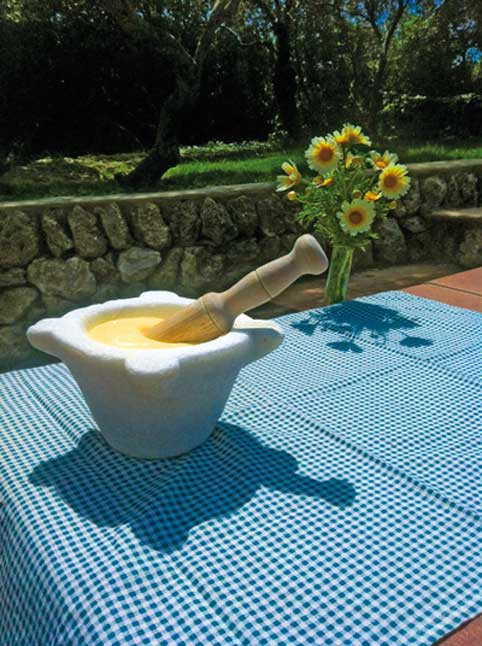
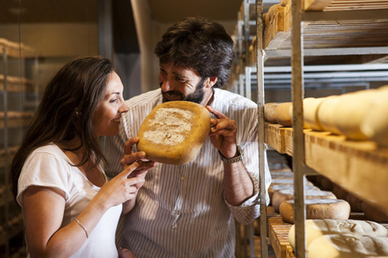

Comer bien para vivir bien
Comer bien es uno de esos placeres que uno debe satisfacer cuando está de viaje. La gastronomía dice mucho de cada pueblo, y la cocina de esta Isla es una prolongación del carácter isleño: auténtica, sencilla y con múltiples matices. ¿No es así Menorca? ¿Una tierra sencilla, llena de matices y tremendamente auténtica?
En los restaurantes menorquines encontrará múltiples maneras de satisfacer su paladar. No se vaya de la Isla sin conocer algunos de sus platos más típicos. Encontrará opciones para todos los gustos y para todos los bolsillos. Los menorquines son expertos a la hora de cocinar el pescado que capturan día a día. Los restaurantes le informarán sobre las capturas del día, y entonces podrá probarlas a la plancha, a la espalda o al horno. Descubra el cap-roig (cabracho) o el gallo de San Pedro. Pruebe el calamar relleno a la menorquina. Le sorprenderán…
Evidentemente, cuando se habla de la cocina de Menorca hay que destacar la caldereta de langosta. Un producto excelso, único, cocinado con verdadera langosta de la Isla, que hará las delicias de cualquier comensal. No es un plato barato, pero merece la pena probarlo alguna vez, mejor aún si puede ser al lado del mar y bañado con algún vino blanco menorquín.
Los menorquines también han sabido aprovechar los productos que da la tierra. Lo que en su día fue una cocina humilde y casi de supervivencia se ha demostrado una gastronomía repleta de sabor. Deguste un oliaigua acompañado con higos, seguramente uno de los platos más menorquines que existen. También son muy apreciadas las berenjenas rellenas, un plato surgido en el campo que hará las delicias de los más cosmopolitas.
Y a la hora del postre, sepa que los menorquines son muy golosos. Su repostería incluye infinidad de pastas dulces, como los pastissets, los carquinyols, los amargos o los crespells. Estos productos le servirán como postre pero también como complemento a media mañana o a media tarde. Los encontrará en cualquiera de las pastelerías y hornos de pan de la Isla, donde también podrá escoger entre una gran variedad de pastas saladas, entre las que destacan las formatjades.
Ahora, si usted lo que quiere es un postre contundente, sabroso y exquisito, decántese por la tortada de almendras. Si le añade una bola de helado, la combinación ya es de diez. Permítase por un día un capricho dulce.
Hablar de gastronomía menorquina en tan corto espacio significa no mencionar productos que no merecen ser olvidados. Como el queso menorquín, los embutidos, el vino, la miel, los licores... Ya ve que en esta Isla se vive bien, pero se come aún mejor.